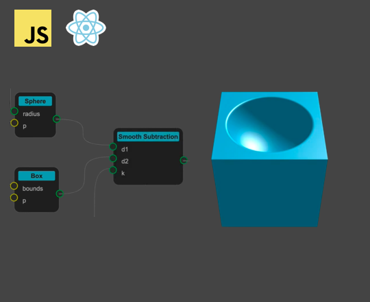
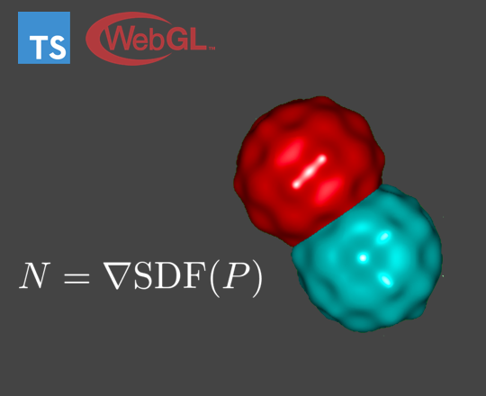
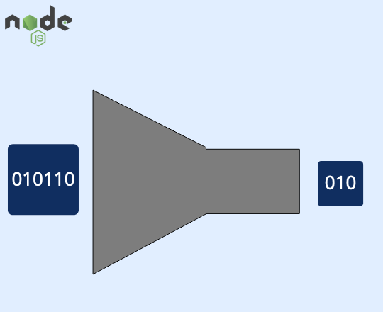

Home
About Me
Skills
Projects
Resume
Raymarching Playground
The Raymarching Playground is a node-based editor to help users understand raymarching.
Users create functions by composing nodes.
One function defines the geometry using a signed-distance field.
Another function shades the object using the Phong Illumination Model.
YouTube Video
GitHub

EasyPitch.js
EasyPitch.js is a JavaScript library for playing musical notes.
Users can adjust the timbre of instruments by specifying the overtone series.
Demo
GitHub
GPU Raymarcher
The GPU Raymarcher provides an API for rendering objects defined by signed-distance fields.
Users can specify a model as a combination of primitive objects.
Additionally, users can apply operations such as distortion to customize the models.
Demo
GitHub

tinystream
- Node.js
- LZW Compression
- Mocha
- Istanbul
This project is a Node.js API for compressed streams.
Mocha and Istanbul provide tests and code coverage.
GitHub

Raymarching Playground
Stuff and words and things
Raymarching Playground
Stuff and words and things